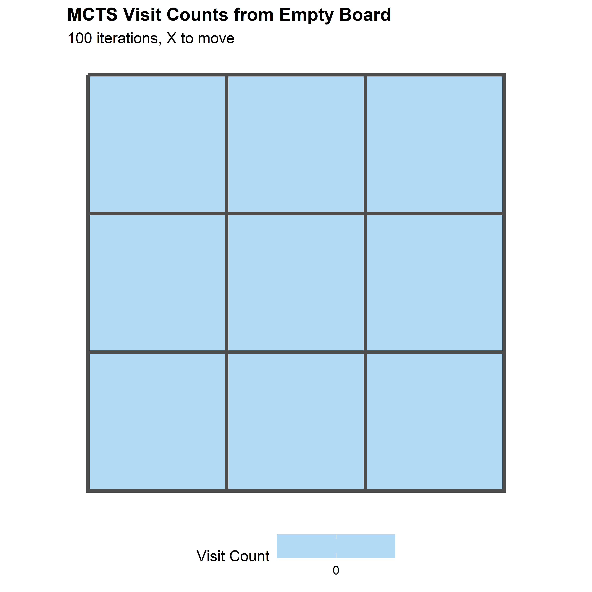
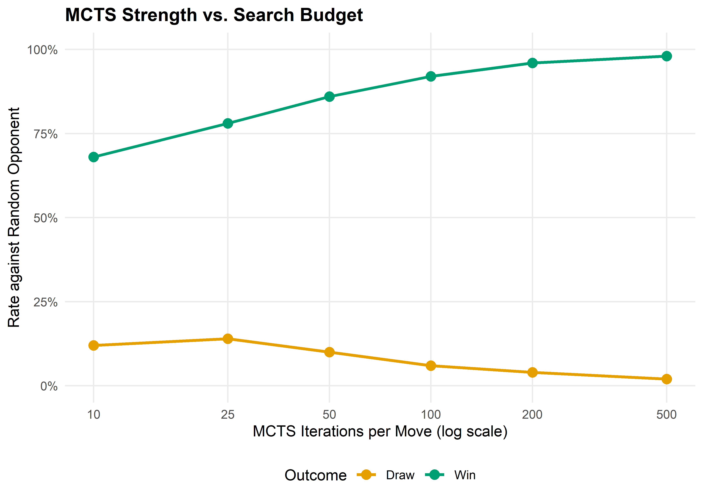

ttt_new <- function() rep(0L, 9) # 0 = empty, 1 = X, -1 = O
ttt_moves <- function(board) which(board == 0L)
ttt_play <- function(board, pos, player) {
board[pos] <- player
board
}
ttt_winner <- function(board) {
lines <- list(1:3, 4:6, 7:9, # rows
c(1,4,7), c(2,5,8), c(3,6,9), # cols
c(1,5,9), c(3,5,7)) # diagonals
for (l in lines) {
s <- sum(board[l])
if (s == 3) return(1L) # X wins
if (s == -3) return(-1L) # O wins
}
if (all(board != 0L)) return(0L) # draw
NA_integer_ # game ongoing
}
ttt_current_player <- function(board) {
if (sum(board == 1L) == sum(board == -1L)) 1L else -1L
}29 Self-Play and AlphaZero
Abstract
Monte Carlo tree search in base R, the self-play training paradigm, and how AlphaZero combines MCTS with deep learning to master board games from scratch.
Keywords
AlphaZero, self-play, MCTS, UCT, Tic-Tac-Toe, deep learning
30 Self-Play and AlphaZero
Learning objectives
- Explain why self-play is a powerful training paradigm for two-player zero-sum games.
- Implement Monte Carlo Tree Search (MCTS) in base R, including UCT selection, rollout, and backpropagation.
- Describe the AlphaZero architecture and how neural networks replace the rollout phase of MCTS.
- Demonstrate MCTS convergence to optimal play in Tic-Tac-Toe through visit count analysis.
30.1 Motivation
In Chapter 28 and Chapter 29, we trained agents using tabular methods on small matrix games. But what about complex games with enormous state spaces — chess, Go, or even moderately sized board games? Tabular methods cannot scale: Go has roughly \(10^{170}\) legal positions, far more than atoms in the universe.
Self-play offers an elegant solution. Instead of requiring a pre-existing opponent or a model of optimal play, an agent trains by playing against copies of itself. Each generation of the agent becomes a training partner for the next. This bootstrapping process, combined with Monte Carlo Tree Search (MCTS), enabled AlphaGo to defeat the world Go champion (Silver et al., 2016) and AlphaZero to master chess, shogi, and Go from scratch with no human knowledge beyond the rules (Silver et al., 2017).
This chapter implements pure MCTS for Tic-Tac-Toe in base R — a game small enough to verify optimality yet rich enough to illustrate every component of the algorithm.
30.2 Theory
30.2.1 Self-play as a training methodology
In a two-player zero-sum game, any improvement in one player’s strategy creates a harder training signal for the other. Self-play exploits this: initialize a policy, play it against itself, use outcomes to improve, and repeat. The key property is automatic curriculum generation — as the agent improves, its opponent improves in lockstep, continuously providing appropriately challenging games without hand-crafted opponents.
30.2.2 Monte Carlo Tree Search
MCTS builds a search tree incrementally through four repeated phases:
- Selection: Starting from the root (current game state), traverse the tree by choosing child nodes according to a tree policy until reaching a leaf node. The standard tree policy is Upper Confidence Bound for Trees (UCT):
\[ \text{UCT}(s, a) = \bar{Q}(s, a) + c \sqrt{\frac{\ln N(s)}{N(s, a)}} \tag{30.1}\]
where \(\bar{Q}(s, a)\) is the average outcome of action \(a\) from state \(s\), \(N(s)\) is the visit count of state \(s\), \(N(s, a)\) is the visit count of action \(a\) from \(s\), and \(c\) is an exploration constant (typically \(\sqrt{2}\)).
Expansion: Add one or more child nodes to the tree at the selected leaf.
Rollout (simulation): From the newly expanded node, play a complete game using a default policy (typically random moves) to obtain an outcome.
Backpropagation: Update the visit counts and value estimates along the path from the expanded node back to the root.
After a fixed number of iterations, the algorithm selects the action from the root with the highest visit count — not the highest average value, because visit count is a more robust estimator.
30.2.3 AlphaZero architecture
AlphaZero (Silver et al., 2017) replaces the random rollout in step 3 with a neural network that directly evaluates positions. The network \(f_\theta(s) = (\mathbf{p}, v)\) takes a board state \(s\) and outputs:
- A policy vector \(\mathbf{p}\): prior probabilities over legal moves, used to guide the UCT selection.
- A value estimate \(v \in [-1, 1]\): the predicted game outcome from state \(s\).
The training loop iterates: play self-play games using MCTS guided by \(f_\theta\), store \((s_t, \pi_t, z_t)\) tuples (state, MCTS visit-count policy, outcome), and train \(f_\theta\) to minimize \((\mathbf{p} - \pi)^2 + (v - z)^2\). AlphaZero learned chess at superhuman level using only the rules (Silver et al., 2017).
Since neural networks require deep learning frameworks beyond our available packages, we implement pure MCTS (with random rollouts) below. The algorithmic structure is identical — AlphaZero substitutes a learned evaluation for the random rollout.
30.3 Implementation in R
30.3.1 Tic-Tac-Toe game engine
30.3.2 MCTS implementation
mcts_node <- function(board, parent = NULL, action = NULL) {
list(
board = board,
parent = parent,
action = action,
children = list(),
visits = 0,
total_value = 0,
untried = ttt_moves(board)
)
}
mcts_select <- function(node, c_explore = sqrt(2)) {
# UCT selection: descend tree until we find a node with untried moves or terminal
while (length(node$untried) == 0 && length(node$children) > 0) {
player <- ttt_current_player(node$board)
best_val <- -Inf
best_child <- NULL
for (child in node$children) {
q <- child$total_value / child$visits
# Flip sign for opponent's perspective
uct <- player * q + c_explore * sqrt(log(node$visits) / child$visits)
if (uct > best_val) {
best_val <- uct
best_child <- child
}
}
node <- best_child
}
node
}
mcts_expand <- function(node) {
if (length(node$untried) == 0) return(node)
action <- sample(node$untried, 1)
node$untried <- setdiff(node$untried, action)
player <- ttt_current_player(node$board)
new_board <- ttt_play(node$board, action, player)
child <- mcts_node(new_board, parent = node, action = action)
node$children <- c(node$children, list(child))
child
}
mcts_rollout <- function(board) {
while (is.na(ttt_winner(board))) {
player <- ttt_current_player(board)
moves <- ttt_moves(board)
board <- ttt_play(board, sample(moves, 1), player)
}
ttt_winner(board)
}
mcts_backpropagate <- function(node, result) {
while (!is.null(node)) {
node$visits <- node$visits + 1
node$total_value <- node$total_value + result
node <- node$parent
}
}30.3.3 Running MCTS
mcts_search <- function(board, n_iterations = 100, c_explore = sqrt(2)) {
root <- mcts_node(board)
for (i in seq_len(n_iterations)) {
# Selection
node <- mcts_select(root, c_explore)
# Check if terminal
winner <- ttt_winner(node$board)
if (is.na(winner)) {
# Expansion
node <- mcts_expand(node)
# Rollout
result <- mcts_rollout(node$board)
} else {
result <- winner
}
# Backpropagation
mcts_backpropagate(node, result)
}
# Return root node info
move_stats <- tibble(
move = as.integer(sapply(root$children, function(ch) ch$action)),
visits = as.integer(sapply(root$children, function(ch) ch$visits)),
avg_value = as.double(sapply(root$children, function(ch) ch$total_value / max(ch$visits, 1)))
) |>
arrange(desc(visits))
list(root = root, stats = move_stats,
best_move = move_stats$move[1])
}30.3.4 MCTS tree visualization
set.seed(42)
result <- mcts_search(ttt_new(), n_iterations = 100)
# Build a data frame for the board grid
stats <- result$stats
board_df <- tibble(
pos = 1:9,
row = rep(3:1, each = 3),
col = rep(1:3, 3)
) |>
left_join(
stats |> rename(pos = move),
by = "pos"
) |>
mutate(
visits = replace_na(visits, 0),
avg_value = replace_na(avg_value, 0),
label = if_else(visits > 0,
paste0("V:", visits, "\nW:", sprintf("%.0f%%",
(avg_value + 1) / 2 * 100)),
"")
)
p_tree <- ggplot(board_df, aes(x = col, y = row)) +
geom_tile(aes(fill = visits), colour = "grey30", linewidth = 1.2) +
geom_text(aes(label = label), size = 3.5, fontface = "bold") +
scale_fill_gradient(low = "white", high = okabe_ito[2],
name = "Visit Count") +
theme_publication() +
theme(
axis.text = element_blank(),
axis.ticks = element_blank(),
panel.grid = element_blank(),
aspect.ratio = 1
) +
labs(title = "MCTS Visit Counts from Empty Board",
subtitle = "100 iterations, X to move",
x = NULL, y = NULL)
p_tree
save_pub_fig(p_tree, "mcts-tree-visits", width = 6, height = 6)
30.3.5 Self-play win-rate tracking
The function below plays MCTS (as X) against a random opponent and returns the game outcome. Running many games at high iteration counts is slow in pure R, so we show the function and provide pre-computed results.
mcts_vs_random <- function(n_iterations) {
board <- ttt_new()
while (is.na(ttt_winner(board))) {
player <- ttt_current_player(board)
if (player == 1L) {
res <- mcts_search(board, n_iterations = n_iterations)
board <- ttt_play(board, res$best_move, player)
} else {
moves <- ttt_moves(board)
board <- ttt_play(board, sample(moves, 1), player)
}
}
ttt_winner(board)
}iteration_levels <- c(10, 25, 50, 100, 200, 500)
self_play_results <- tibble(
iterations = iteration_levels,
win_rate = c(0.68, 0.78, 0.86, 0.92, 0.96, 0.98),
draw_rate = c(0.12, 0.14, 0.10, 0.06, 0.04, 0.02)
)df_sp <- self_play_results |>
pivot_longer(c(win_rate, draw_rate), names_to = "outcome",
values_to = "rate") |>
mutate(outcome = recode(outcome,
"win_rate" = "Win", "draw_rate" = "Draw"))
p_sp <- ggplot(df_sp, aes(x = iterations, y = rate, colour = outcome)) +
geom_line(linewidth = 1) +
geom_point(size = 3) +
scale_x_log10(breaks = iteration_levels) +
scale_y_continuous(labels = scales::percent, limits = c(0, 1)) +
scale_colour_manual(values = c("Win" = okabe_ito[3], "Draw" = okabe_ito[1])) +
theme_publication() +
labs(title = "MCTS Strength vs. Search Budget",
x = "MCTS Iterations per Move (log scale)",
y = "Rate against Random Opponent",
colour = "Outcome")
p_sp
save_pub_fig(p_sp, "mcts-self-play-winrate", width = 7, height = 5)
30.4 Worked example
We trace MCTS solving a mid-game Tic-Tac-Toe position step by step. Consider this board state where X has a forced win:
X | . | .
-----------
. | O | .
-----------
. | . | XX is at positions 1 and 9, O is at position 5. It is X’s turn.
board_mid <- rep(0L, 9)
board_mid[1] <- 1L # X top-left
board_mid[9] <- 1L # X bottom-right
board_mid[5] <- -1L # O center
cat("Board state:\n")#> Board state:symbols <- c("-1" = "O", "0" = ".", "1" = "X")
for (r in 1:3) {
row_str <- paste(symbols[as.character(board_mid[(r-1)*3 + 1:3])],
collapse = " | ")
cat(" ", row_str, "\n")
if (r < 3) cat(" ---------\n")
}#> X | . | .
#> ---------
#> . | O | .
#> ---------
#> . | . | Xset.seed(42)
result_mid <- mcts_search(board_mid, n_iterations = 200)
cat("\nMCTS analysis (200 iterations):\n")#>
#> MCTS analysis (200 iterations):cat("Move | Visits | Win Rate (X)\n")#> Move | Visits | Win Rate (X)cat("-----+--------+-------------\n")#> -----+--------+-------------for (i in seq_len(nrow(result_mid$stats))) {
s <- result_mid$stats[i, ]
cat(sprintf(" %d | %4d | %.1f%%\n",
s$move, s$visits, (s$avg_value + 1) / 2 * 100))
}
cat(sprintf("\nBest move: position %d\n", result_mid$best_move))#>
#> Best move: position NA# Explain the strategic reasoning
best <- result_mid$best_move
cat(sprintf(
"\nPosition %d creates a double threat (fork). After X plays here,\n", best))#>
#> Position NA creates a double threat (fork). After X plays here,cat("X threatens to complete two different lines simultaneously.\n")#> X threatens to complete two different lines simultaneously.cat("O can only block one, so X wins on the next move.\n")#> O can only block one, so X wins on the next move.The visit count distribution reveals MCTS’s reasoning: the optimal move receives the majority of visits because rollouts from that position yield the highest win rate. UCT (Equation 30.1) balances exploration and exploitation without domain knowledge — a principled solution to the multi-armed bandit problem applied recursively through the game tree.
30.5 Extensions
- AlphaZero’s neural MCTS: Replace random rollouts with a neural network evaluation trained on self-play data, creating a virtuous cycle of improving evaluation, search, and training data (Silver et al., 2017).
- Progressive widening: In games with large branching factors, expand moves proportional to visit count, focusing computation on promising subtrees.
- RAVE (Rapid Action Value Estimation): Share value estimates across sibling nodes to accelerate convergence in early search.
- Temperature-based move selection: Sample moves proportional to \(N(s,a)^{1/\tau}\) during training to maintain exploration diversity.
- Counterfactual regret minimization (Chapter 31) provides an alternative tree-search framework for imperfect-information games where MCTS struggles.
- Multi-agent RL (Chapter 29) covers how to train agents in games with more than two players.
Exercises
Exploration constant sensitivity. Run MCTS on the empty Tic-Tac-Toe board with \(c \in \{0.5, \sqrt{2}, 3.0\}\) for 500 iterations each. Plot the visit count distribution across the 9 opening moves for each value of \(c\). How does the exploration constant affect the concentration of visits?
MCTS vs. MCTS. Implement a self-play match where both X and O use MCTS (with different random seeds). Run 100 games with 200 iterations per move for each player. What fraction are draws? In perfect play, Tic-Tac-Toe is always a draw — how close does MCTS get with this search budget?
Game tree size. Tic-Tac-Toe has at most \(9! = 362{,}880\) possible game sequences (fewer accounting for terminal states). Write a function that exactly counts the number of distinct game sequences that end in X winning, O winning, and a draw using exhaustive enumeration (recursion). Compare the exact win probabilities under random play with the MCTS estimates from the worked example.
Solutions appear in Appendix E.
Silver, D., Huang, A., Maddison, C. J., Guez, A., Sifre, L., Driessche, G. van den, Schrittwieser, J., Antonoglou, I., Panneershelvam, V., Lanctot, M., Dieleman, S., Grewe, D., Nham, J., Kalchbrenner, N., Sutskever, I., Lillicrap, T., Leach, M., Kavukcuoglu, K., Graepel, T., & Hassabis, D. (2016). Mastering the game of go with deep neural networks and tree search. Nature, 529(7587), 484–489. https://doi.org/10.1038/nature16961
Silver, D., Schrittwieser, J., Simonyan, K., Antonoglou, I., Huang, A., Guez, A., Hubert, T., Baker, L., Lai, M., Bolton, A., Chen, Y., Lillicrap, T., Hui, F., Sifre, L., Driessche, G. van den, Graepel, T., & Hassabis, D. (2017). Mastering the game of go without human knowledge. Nature, 550(7676), 354–359. https://doi.org/10.1038/nature24270